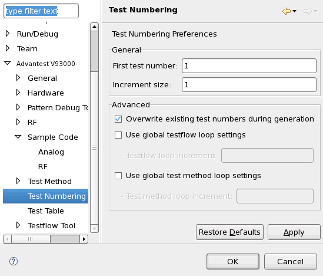

Test Numbering preferences page
Test numbering settings are made in the Test Numbering section of the Preferences dialog.

The dialog pane's elements have these functions:
- First test number: The number that is assigned to the first test
included in the test numbering.
Increment size: The number that is added to the current test number to calculate the number for the next test.
- Overwrite existing test numbers during generation:
- If this option is checked, new test numbers are assigned to all selected tests.
- If this option is unchecked, test numbers are assigned only to those selected tests that do not already have test numbers.
- Use global testflow loop settings: If this option is checked, each
new test loop iteration at the testflow level increases the test number by the specified
amount. That is, the number of the first test of the new loop is greater by this amount instead
of by the standard increment entered in Increment size, above.
If you check this option, you must enter a value in the Testflow loop increment field.
- Use global test method loop settings: This option is similar to
Use global testflow loop settings, discussed above, but applies to
loops within test methods instead of loops in testflows.
If you check this option, you must enter a value in the Test method loop increment field.
- Restore Defaults: Clicking this button resets the dialog pane to the factory default settings.
- Apply: Clicking this button saves the current dialog pane settings. They remain in effect for all test numbering through the GUI until they are changed.
You can open the dialog in the SmarTest Work Center by:
- Choosing to open the Preferences dialog and then clicking .
- Right-clicking a field in the Test Number column and choosing Test Numbering Preferences from the shortcut menu.
Functional changes
- Introduced in SmarTest 6.5.0